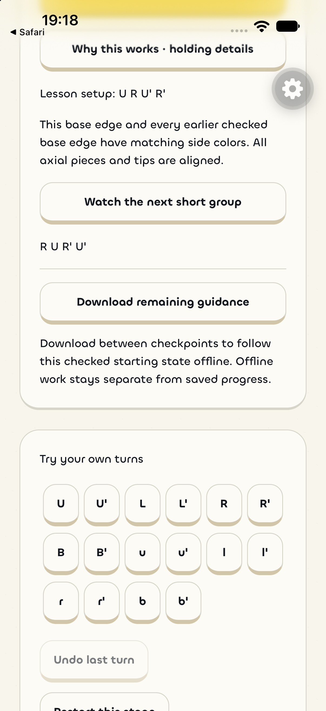
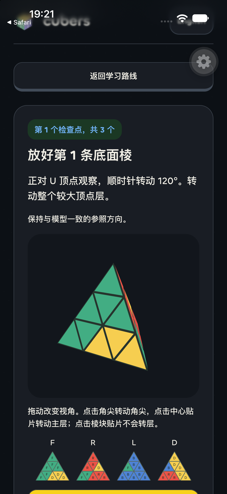
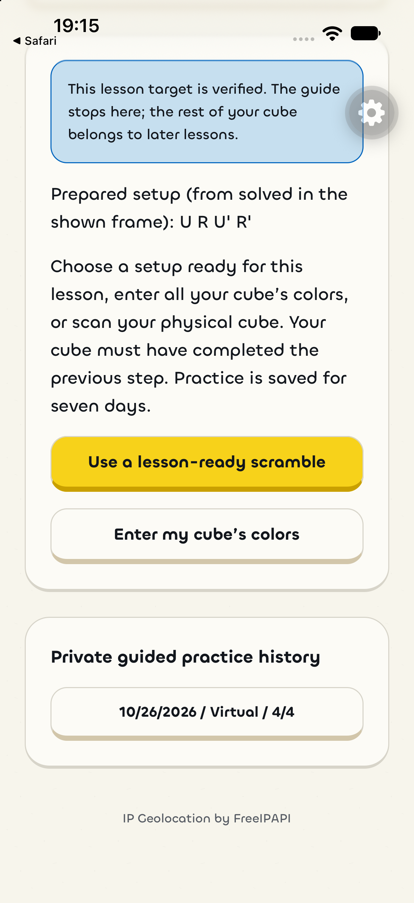
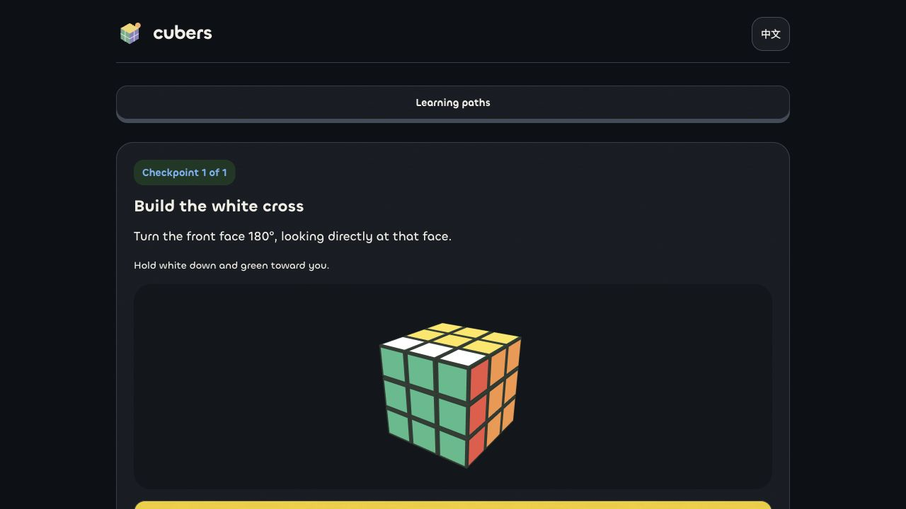
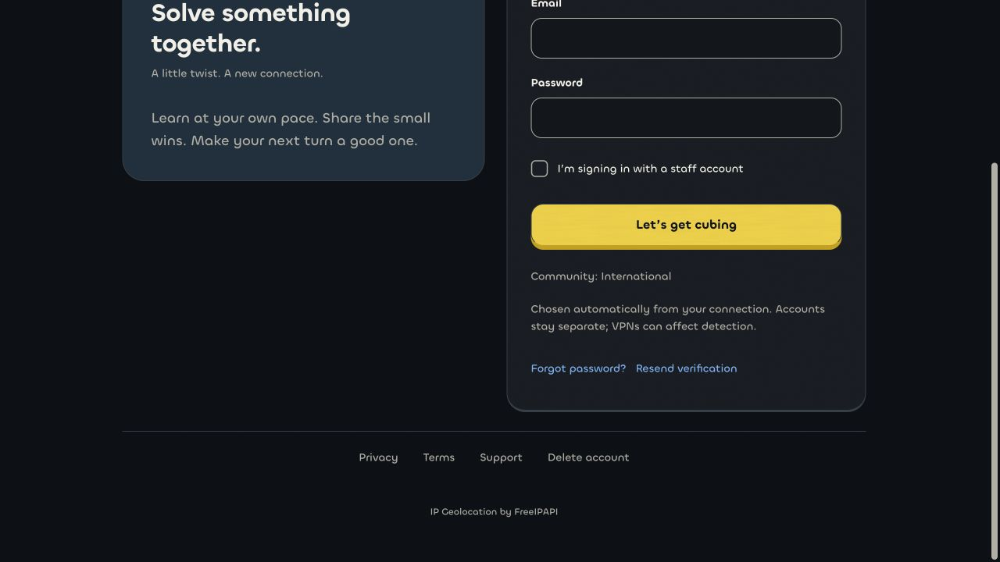

Cubers native review
Actual iOS 27 simulator and browser captures from isolated synthetic-account checks on 26 October 2026.
Results and current review packages
Earlier UI before/after comparison





These are development review captures. Signed Release, Android runtime, real camera and Bluetooth device acceptance remain open.